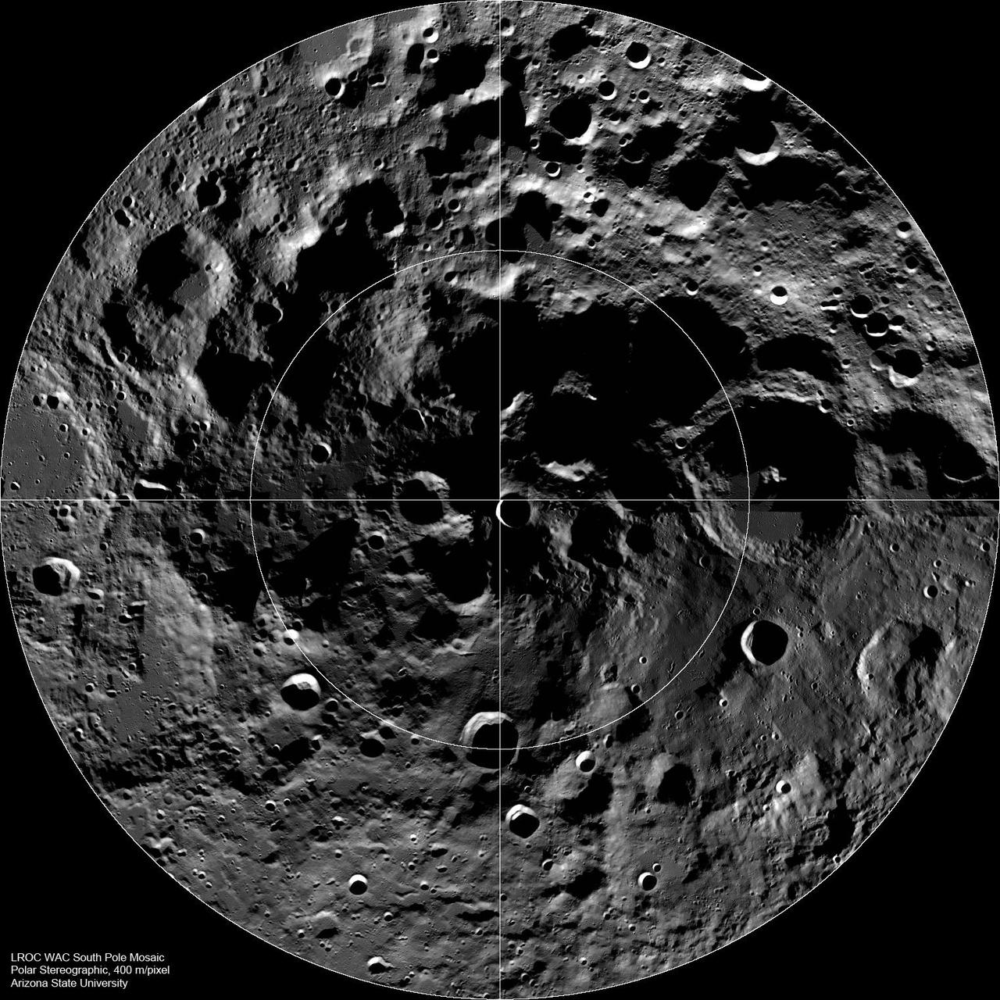
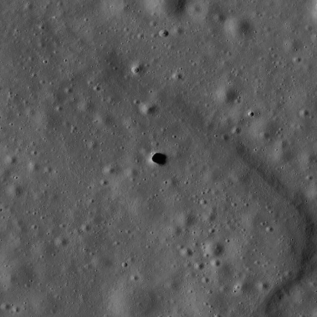
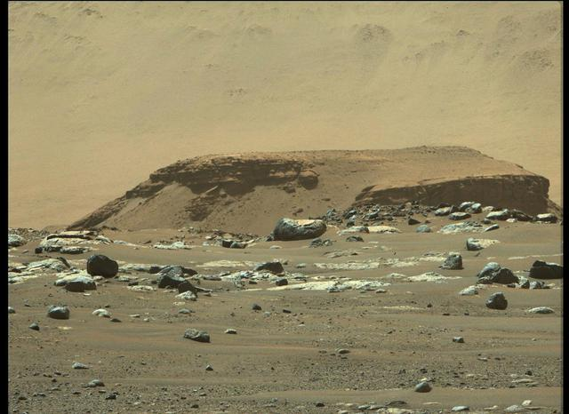
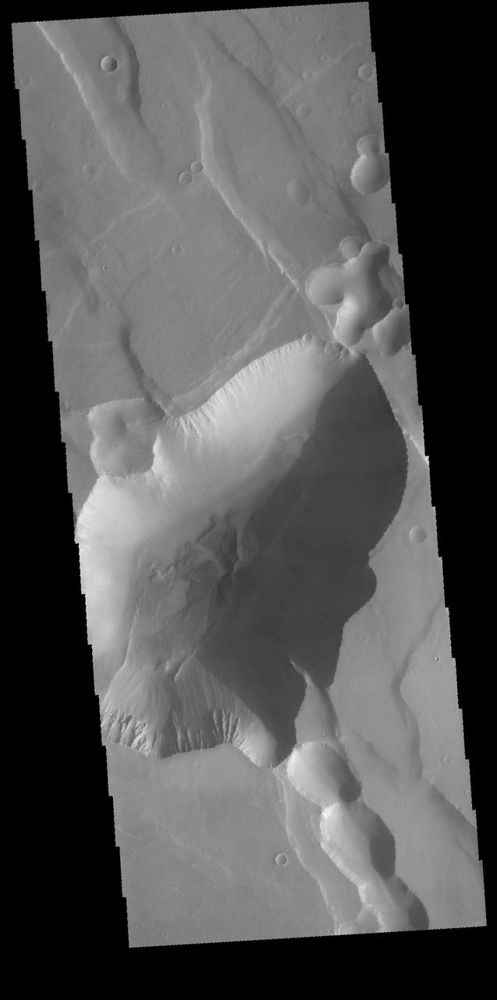
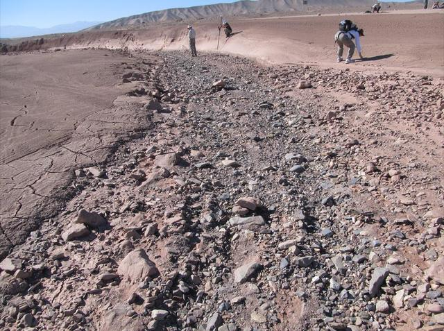
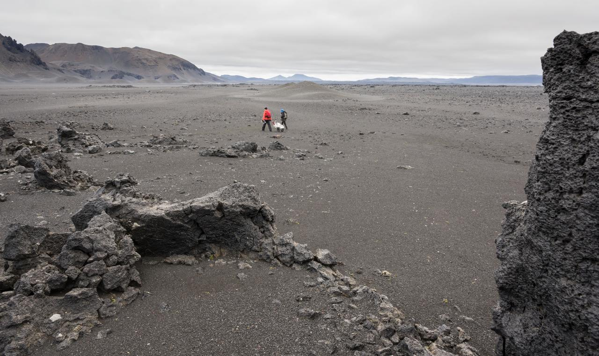
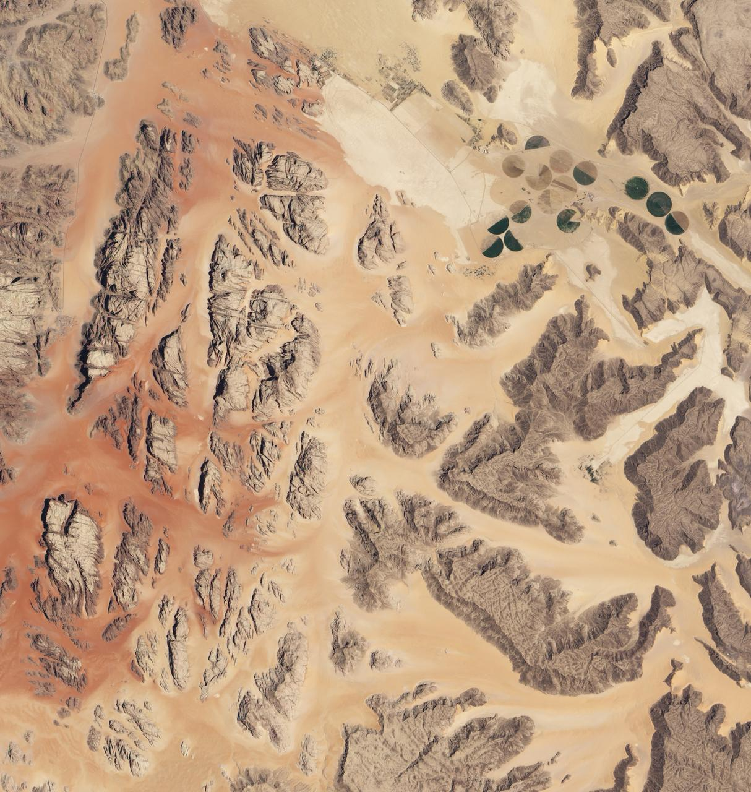
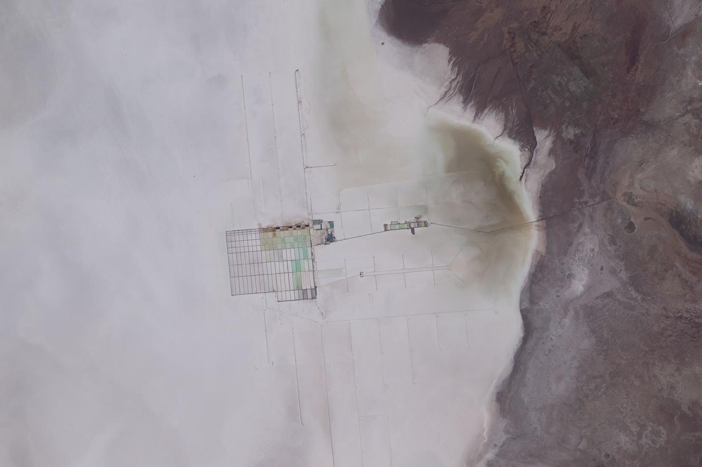

Find Earth's twins for Moon bases & Mars outposts
Pick a Moon or Mars base site. AnalogFinder scores its terrain — slope, relief, temperature swing, minerals, cover — and ranks 17 real Earth locations by match. On a map, with plain reasons and honest limits.
Real places, real imagery
Every place in this app is real — shown in photographs from NASA's public image library.

MOON
MOON
MARS
MARS
EARTH
EARTH
EARTH
EARTHEverything you need to pick the right analog
Built around open NASA & partner data — no black box, no exaggerations.
Target picker
8 mission-relevant sites — 4 on the Moon, 4 on Mars — each with a measurable terrain fingerprint.
Weight sliders
Care more about slope than minerals? Drag the sliders — the ranking re-sorts live, and the math stays fully visible.
Analog map
All 17 Earth candidates on a clean dark globe. Click any marker for the full comparison card.
Radar comparison
A side-by-side radar chart shows where each candidate wins and loses, criterion by criterion.
New candidates layer
5 new candidate sites, shortlisted with a documented screening approach (slope + NDVI filter, then a mineral check). Values are estimates pending computation.
Honest limits
No Earth site has vacuum, radiation or low gravity. Every result says what it can't test — plainly.
How it works
Four steps from a distant world to a field-testable Earth location.
Pick a target
Choose a Moon or Mars base site and read its terrain fingerprint.
Set your priorities
Adjust the five weight sliders to match your mission's needs.
Read the ranking
All Earth candidates re-score instantly, from strongest match down.
Open the card
Compare fingerprints on a radar chart and read the honest limits.
Designed for open data
No dataset is loaded in this demo — fingerprints are representative estimates. The full pipeline runs offline in Python (earthaccess, rasterio, numpy) and exports one sites.json; the app stays backend-free.
Our honesty promise
Analogs test hardware, operations and geology — never vacuum, radiation or 1/6 g. Every result in AnalogFinder says so out loud.
Moon base target sites
Mars base target sites
Methodology
How AnalogFinder turns a distant world into an Earth shortlist — every number visible and checkable.
1 · The scoring engine
Each target has 5 measurable criteria. Every Earth candidate gets a closeness per criterion, then a weighted average:
score = Σ ( wi × closenessi ) / Σ wi → × 100 %
Your sliders set w — nothing is hidden. Weight slope 3× and minerals 0×, and the math says exactly that.
| Criterion | Unit | Normalization scale | Why it matters |
|---|---|---|---|
| Mean slope | ° | 5° | Traverse difficulty, landing-site safety, construction |
| Relief (10 km) | m | 1,200 m | Local terrain energy — roughness a rover/crew must deal with |
| Temperature swing | K | 45 K | Thermal cycling stress on hardware and suits |
| Mineral class fit | index | 0.5 | Sulfates / clays / carbonates / basalts similarity |
| Rocky surface cover | index | 0.45 | Bare-rock vs vegetated — the NDVI filter |
2 · Credibility check — established analogs only, reported honestly
With equal weights, established analogs are checked against the right targets. The bar is top 5 of 17 — a random pick makes it ~29% of the time. Misses are shown, not hidden:
3 · Data sources
All processing is restricted to the resource list provided for the challenge — every source below is from that list. Processing runs offline in Python and exports one sites.json; no backend.
| Purpose | Source | Notes |
|---|---|---|
| Earth elevation | Copernicus Data Space — Copernicus DEM GLO-30 | Compute slope and roughness |
| Earth radar roughness | Copernicus Data Space — Sentinel-1 SAR | Backscatter texture of rocky vs smooth surfaces |
| Earth surface cover | Copernicus Data Space — Sentinel-2 | Compute NDVI to exclude vegetated areas |
| Earth radar (legacy) | RADARSAT-1 — CSA | Historic Canadian SAR archive |
| Earth radar (current) | RADARSAT Constellation (RCM) — CSA | Operational C-band SAR |
| SAR processing method | CSA SAR Tutorial — GitHub | Calibration & filtering recipes for RADARSAT products |
| Earth radar (L-band) | ALOS PALSAR — JAXA G-Portal | Annual radar mosaics; penetrates dry sand |
| Dataset discovery | NASA Earthdata Search | Search and access Earth datasets |
| Imagery browse | NASA Worldview | Quick-look satellite imagery |
| ESA campaign data | ESA OpenScienceData | ESA EO campaign archive |
| Mars minerals & topography | NASA PDS — CRISM, MOLA | Mineral maps and Mars topography |
| Moon temperature | LRO Diviner — PDS Geosciences | Cold, permanently shadowed areas |
| LRO products | LRO archive — PDS Geosciences | Diviner & related LRO data |
4 · The honesty philosophy
Every Earth analog fails three things, and we say so on every single result card:
What analogs can test: surface operations, mobility, drilling, geological sampling and crew isolation. Each card lists its site-specific gaps.
5 · Transparency & AI disclosure
• Dataset list is restricted to the resource links provided for the challenge (see Data sources above).
• AI-assisted tooling was used for code drafting and text editing; all scientific pairings, criteria and limits are documented here for team and judge review.
6 · Known method limitations
Relief windows. Gale's "~5 km" is crater-scale; relief values need recomputation at a fixed 10-km window (Copernicus DEM on Earth, MOLA on Mars) before submission.
Temperature. Earth values are daily swings; the polar rim values (~35 K) are estimates pending a proper LRO Diviner analysis.
Mineral & cover indices. Ordinal expert estimates, to be tied to Sentinel-2 NDVI, radar backscatter (RADARSAT/ALOS) and PDS spectral references later.
Validation circularity. Fingerprints were set by hand, so the credibility check validates the inputs as much as the engine. The cutoff is stated openly and misses are reported, not hidden.